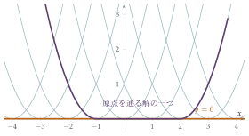

STEP III 1994、第4問
先に進む前に問題を読んでおこう。問題は STEP Support Programme の問題データベースにある： step.maths.org/questions/94-s3-q4
導入
微分方程式（differential equation）とは、ある量がどのように変化するかを定める規則である。たとえばニュートン（Newton）の法則は、惑星が今どこにあるかが与えられれば、それがどう動くかを教えてくれる。古典物理学の描く世界像では、これで十分である。つまり、現在の世界の状態がわかれば、法則によってその未来はすべて決まる。ラプラス（Pierre-Simon Laplace）は、あらゆる位置と速度を知っていれば何もかも予言できる知性を思い描いた。この世界像は、ある数学的な仮定の上に成り立っている。それは、微分方程式に初期条件を与えれば、解がただ一つ存在するという仮定である。
この問題は、その仮定が成り立たないことがあると示している。一見何の変哲もない方程式 \((y')^2 = 4y\) には、\(x\) 軸に沿って進み、自ら選んだ瞬間にそこから離れていく解がある。点によっては、そこを通る解が無数に存在する。現在を知っても未来は決まらないのである。一意性（uniqueness）がちょうどどのようなときに成り立つかを明らかにすることは、大学の微分方程式の講義で最初に学ぶ定理の一つである。
取りかかる前に
両辺の平方根をとると \(y' = \pm2\sqrt{y}\) となる。\(y = (x - c)^2\) を試してみよう。これは方程式を満たすか。もっと簡単な解はないだろうか。
\(y = (x - c)^2\) ならば \(y' = 2(x - c)\) であり、\((y')^2 = 4(x - c)^2 = 4y\) となる。よって、放物線 \(y = (x - c)^2\) はどれも、すべての \(x\) に対して解である。さらに \(y = 0\) も解である。実際 \((0)^2 = 4 \times 0\) である。この最後の解を覚えておいてほしい。これが問題全体の鍵となる。
順を追って解く
段階 1 一点を通る解
放物線 \(y = (x - c)^2\) のうち、\((a, b^2)\) を通るのはどれか。
\((a - c)^2 = b^2\) が必要であるから \(a - c = \pm b\)、すなわち \(c = a - b\) または \(c = a + b\) である。\(b \neq 0\) よりこの二つは異なり、次の二つの解が得られる。 \[y = (x - a + b)^2 \qquad\text{および}\qquad y = (x - a - b)^2. \qed\] （見落とした解がないことも確かめておくべきである。\(y > 0\) となる範囲では、\(y' = \pm2\sqrt{y}\) の符号は一定であり、\(\frac{\mathrm{d}}{\mathrm{d}x}\sqrt y = \frac{y'}{2\sqrt y} = \pm1\) となるので \(\sqrt y = \pm(x - c)\) であり、これらの放物線が得られる。したがって、与えられた点の近くで、\(y\) が正である限り、解はこの二つしかない。しかし、解が \(x\) 軸に達すると、第3段階で見るように零解とつなぎ合わせることができ、すべての \(x\) で定義された解がさらに無数に得られる。問題の「二つの解」とは、この二つの放物線のことである。）
段階 2 二つの点と共通の解
原点を通る解は \(y = x^2\)（\(c = 0\) の放物線）でなければならない。これは \(x = 1\) と \(x = -1\) で高さ \(1\) を通る。そこで \((a_1, 1) = (1, 1)\)、\((a_2, 1) = (-1, 1)\) とおく。
\((1, 1)\) を通る解は（\(a = 1\)、\(b = \pm1\) として）\(y = x^2\) と \(y = (x - 2)^2\) である。\((-1, 1)\) を通る解は \(y = (x + 2)^2\) と \(y = x^2\) である。原点を通る解は、どちらの場合も同じ曲線 \(y = x^2\) である。■
段階 3 解の族全体と共通接線
さまざまな \(c\) について、放物線 \(y = (x - c)^2\) をいくつか描いてみよう。それらすべてに接する直線はどれか。その直線自身は解だろうか。
放物線 \(y = (x - c)^2\) はどれも頂点 \((c, 0)\) で \(x\) 軸に接するので、\(x\) 軸は族全体の共通接線、すなわち族の包絡線（envelope）である（図 8.1.1）。そして \(x\) 軸 \(y = 0\) はそれ自身が微分方程式の解である。これは放物線のどれでもなく、別個の特異解（singular solution）である。
段階 4 なぜ重要なのか
原点から出発しよう。原点を通る解はどれか。しばらく \(x\) 軸に沿って進み、その後そこから離れる解を作れるだろうか。
原点を通る解として \(y = x^2\) と \(y = 0\) がある。しかし、実際にはもっと多くのことが言える。各放物線は \(x\) 軸と接する（そこではどちらも傾きが \(0\) である）ので、解の断片を滑らかにつなぎ合わせることができる。任意の \(c_1 \leq 0 \leq c_2\) に対して、 \[y = \begin{cases} (x - c_1)^2 & x < c_1, \\ 0 & c_1 \leq x \leq c_2, \\ (x - c_2)^2 & x > c_2 \end{cases}\] は至るところで \((y')^2 = 4y\) を満たす微分可能な関数であり、原点を通る。\(x\) 軸上のどの点を通る解も無数に存在する。解は好きなだけ \(y = 0\) にとどまり、それから離れていくことができるのである。共通接線こそが、一意性が崩れる場所である。■

振り返り
まず簡単な解を探す。\(y = (x - c)^2\) と \(y = 0\) を試すことで、全体像が見えた。
包絡線は特異解を与える。解の族の共通接線は、それ自身が族に属さない解になることがある。
つなぎ合わせ。二つの解が接するところでは、それらをつないで新しい微分可能な解を作ることができる。こうして一意性の破れが広がっていく。
背後にある数学
ピカール–リンデレーフの定理（1890–1894年ごろにピカール（Émile Picard）とリンデレーフ（Ernst Lindelöf）が証明した）によれば、\(F\) が \(y\) についてリプシッツ連続（Lipschitz）であるとき、すなわち \(|F(x, y_1) - F(x, y_2)| \leq L|y_1 - y_2|\) を満たす定数 \(L\) が存在するとき、方程式 \(y' = F(x, y)\) は \(y(x_0) = y_0\) のもとで \(x_0\) の近くにただ一つの解をもつ。おおまかに言えば、\(y\) が変化するとき \(F\) が無限に速く変化してはならないということである。我々の方程式は \(y' = \pm2\sqrt y\) であり、\(\sqrt y\) は \(y = 0\) で傾きが無限大になる。そこではリプシッツ連続ではなく、まさにそこで一意性が破れるのである。（ペアノ（Giuseppe Peano）は1886年に、\(F\) が連続であるだけで解の存在（existence）は保証されるが、一意性は保証されないことを示した。）ピカール–リンデレーフの定理の証明では、第 2.2 節 の縮小写像の原理（contraction mapping principle）によって収束する反復法を用いる。
水漏れするバケツ
物理的な例を挙げよう。底に穴のあいたバケツは、トリチェリ（Torricelli）の法則に従って空になる。水の高さ \(h\) は \(h' = -k\sqrt h\) を満たす。時間を順方向に進める限り、何も問題はない。バケツは空になり、空のままである。しかし時間を逆向きにたどってみよう。空のバケツを見つけても、方程式からはそれがいつ空になったのかがわからない。常に \(h = 0\) である解も、ある時刻まで満杯で、その後水が抜けた解も、すべて「今は空である」ことと矛盾しない。一意性の破れは、過去についての情報が失われたという事実の数学的な影なのである。
ノートンのドーム
2003年、哲学者 John Norton は、摩擦のないドームで、その頂上にぴったり置かれた球がニュートンの法則に従って \(r'' = \sqrt r\) という形の方程式を満たすような形状のものを考えた。一つの解は、球が永遠に頂上にとどまるというものである。しかし別の解もあり、それらでは球が任意の時間だけ頂上にとどまった後、何の原因もなく自発的に任意の方向へ転がり落ちる。この例は今も議論が続いている。古典力学は本当に決定論的（deterministic）なのだろうか。数学的には、これはまさにこの問題と同じ種類の一意性の破れである。
思考のスキル
解を一つ見つけても、それが唯一の解であることにはならない。特に方程式に滑らかでない関数が含まれる場合には、ほかに解がないかを問うこと。
大学では、存在と一意性の定理が、どのような条件が必要かを正確に教えてくれる。ここでは、零で傾きが無限大になる平方根があるだけで、一意性を壊すのに十分であった。
次の一歩
二つの増加率。STEP II 2018、第8問 に取り組んでみよう。この問題では、二つの成長方程式を置換によって解く。そのうえで、なぜ \(y = 0\) も同じ初期値をもつ解なのか、そしてそれが一意性について何を意味するのかを考えてみよう。
水漏れするバケツ。\(h(0) = h_0 > 0\) のもとで \(h' = -k\sqrt h\) を解け。バケツが空になるのはいつか。ある \(T\) について \(h(T) = 0\) であり、すべての \(t \geq T\) について \(h(t) = 0\) となる、異なる二つの解を書け。
一意性の回復。\(y(0) = 0\) のもとで \(y' = 2y\) の解は \(y = 0\) のみであることを示せ。（ヒント：\(\frac{\mathrm{d}}{\mathrm{d}x}(ye^{-2x})\) を考えよ。）\(2\sqrt y\) にはなくて \(2y\) にはある性質は何か。
3乗。原点を通る \(y' = 3y^{2/3}\) の解をすべて求めよ。
さらに学ぶために
Morris Hirsch, Stephen Smale & Robert Devaney, Differential Equations, Dynamical Systems, and an Introduction to Chaos（Academic Press）。存在と一意性、そしてこの章の内容の多くを扱っている。
George Simmons, Differential Equations with Applications and Historical Notes（CRC Press）。歴史的な話題に富んだ古典的名著。特異解と包絡線を論じている。
John Norton, 「The dome: an unexpectedly simple failure of determinism」, Philosophy of Science 75 (2008)。短く読みやすい。